Introducción del Proyecto
Este proyecto presenta el desarrollo de una solución integral de Business Intelligence para la empresa "Mundo de Patas", implementando una arquitectura cloud moderna utilizando las herramientas de Microsoft Azure y Power Platform, como parte de la Diplomatura de Estudio en Business Analytics 2025-01 - PUCP.
Sobre Mundo de Patas
Mundo de patas es una empresa e-commerce de venta de productos para mascotas, que requería la mejora y modernización de sus procesos de gestión de datos y análisis de negocio para impulsar sus ventas y tomar decisiones estratégicas basadas en datos en tiempo real.
Objetivos del Proyecto
Implementar una solución end-to-end que permita la captura, procesamiento, almacenamiento y visualización de datos empresariales, utilizando tecnologías cloud de Microsoft para garantizar escalabilidad y eficiencia operativa.
Diagrama de Arquitectura
Estructura de la solución cloud implementada, mostrando la integración entre todas las capas y servicios de Microsoft Azure.
Data Sources: Los datos provienen de una base de datos SQL local, que actúa como fuente principal de información para el ecosistema analítico.
Data Layer: La información se centraliza en Azure SQL Database, que permite un almacenamiento seguro, estructurado y escalable en la nube.
Application Layer: Se integran aplicaciones de negocio mediante Power Apps para el registro e interacción con los datos de los usuarios del negocio.
ETL Layer: A través de Dataflows y Pipelines en Microsoft Fabric, se gestionan los procesos de extracción, transformación y carga (ETL), automatizando el flujo de datos hacia el Data Warehouse. Python Notebooks para validaciones y procesos adicionales de análisis.
Data Warehouse Layer: Los datos transformados se consolidan en un Fabric Data Warehouse, optimizado para análisis avanzado y procesamiento eficiente. Con Power Automate, se gestionan flujos de trabajo automáticos, notificaciones y tareas repetitivas que complementan el ecosistema.
Presentation Layer: Los datos consolidados son consumidos por Power BI, generando dashboards y reportes interactivos que soportan la toma de decisiones.
User Access: Los usuarios finales acceden a la información procesada en Power BI de manera segura y según sus roles, obteniendo reportes claros y actualizados en tiempo real.
Capa de Datos
Base de Datos Relacional con Azure SQL
La capa de datos del sistema de ventas de Mundo de Patas ha sido diseñada para administrar de forma eficiente los procesos de comercialización, control de clientes y gestión de transacciones en una tienda online. El modelo contempla la trazabilidad de productos, usuarios, pagos, envíos y carritos de compra, asegurando un adecuado soporte analítico y operativo.
Esta base de datos está normalizada y distribuida en diversas tablas principales que incluyen:
🛒 Ventas: Registra todas las transacciones realizadas por los clientes. Incluye información del usuario, los productos adquiridos, la cantidad, el precio unitario, el monto total y la fecha de la operación.
👤 Usuarios: Almacena la información personal de los clientes: nombres, apellidos, género, DNI, fecha de nacimiento, estado civil, contacto y credenciales de acceso.
📦 Productos: Contiene el catálogo de artículos disponibles, incluyendo nombre, descripción, precio, stock, marca, categoría, unidad de medida y proveedor.
💳 Pagos: Registra los pagos asociados a cada venta, con información sobre el medio de pago utilizado, el monto abonado, la fecha y el estado del pago.
🚚 Envíos: Administra la logística de entrega de los pedidos. Incluye datos como dirección, costo de envío, fechas estimadas y reales de entrega, además del estado del despacho.
El modelo se encuentra diseñado para un despliegue en Azure SQL, garantizando escalabilidad, seguridad y disponibilidad.
Azure SQL Database
Transact-SQL
Modelado Relacional
Diagrama Entidad-Relación
Estructura de la base de datos relacional con las entidades principales del negocio, mostrando las relaciones entre tablas maestras y transaccionales.
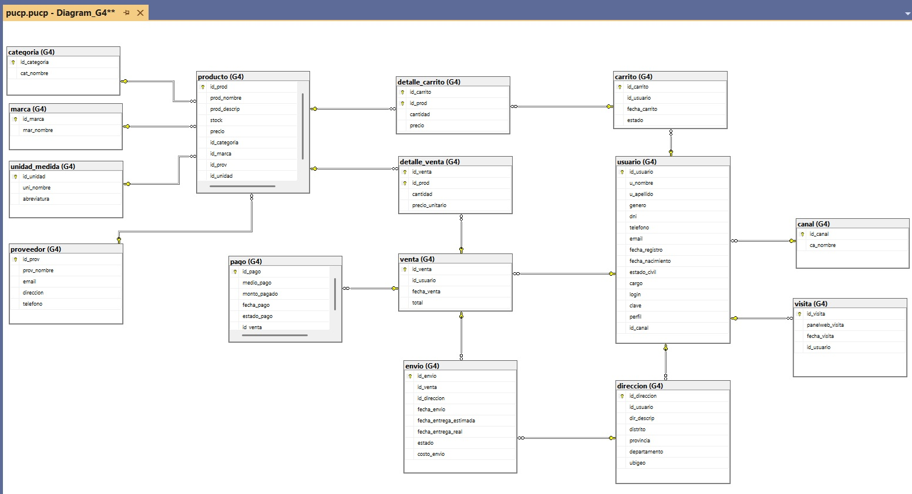
Capa de Aplicación
Ingreso de Datos con Microsoft Power Apps
Desarrollo de aplicaciones móviles y web para la captura eficiente de datos operativos como el registro de ventas, productos y clientes, permitiendo a los usuarios interactuar de manera intuitiva con el sistema.
Microsoft Power Apps
Canvas Apps
Model-driven Apps
Power Platform
Diagrama de Flujo de la Aplicación
El flujo de trabajo comienza con el inicio de sesión del usuario. Luego, el sistema pregunta qué tipo de gestión va a realizar, ofreciendo tres opciones: Productos (para registrar o modificar productos, marcas y categorías), Clientes (gestión de clientes), y Ventas (proceso más complejo que incluye verificación de cliente, selección de productos, registro de pagos y envíos).
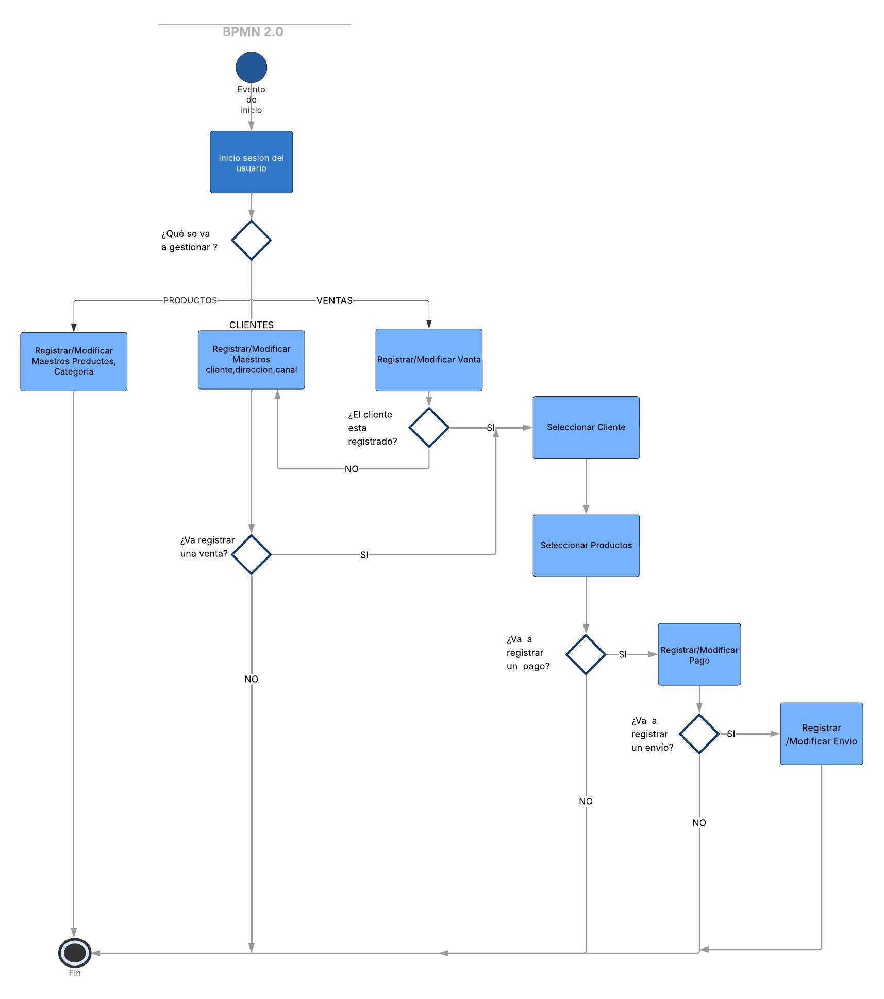
Pantalla Principal
Es el punto de entrada principal de la aplicación, diseñado para darle al usuario acceso rápido y visual a las tres áreas clave de la empresa. Muestra el logo de "Mundo de Patas" y contiene tres botones o tarjetas intuitivas que enlazan directamente a las secciones principales: Gestión de Productos, Gestión de Clientes y Gestión de Ventas. Funciona como un centro de control centralizado y fácil de usar.
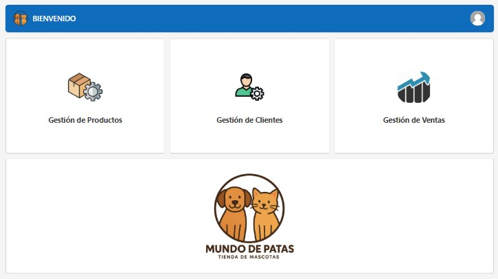
Gestión de Productos
Permite administrar el inventario de la tienda de manera eficiente. Incluye un panel de navegación izquierdo con lista de productos (ID, nombre, precio), detalle del producto seleccionado con información técnica y comercial, funciones de gestión (editar, eliminar, nuevo) y barra de búsqueda. Funciona como un centro de control completo para el inventario.
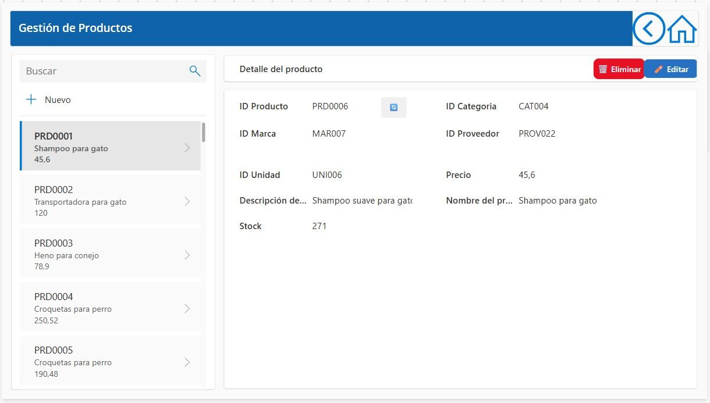
Gestión de Clientes
Permite administrar la información de los clientes de manera centralizada. Incluye panel de navegación izquierdo con lista de clientes (ID único, nombre, correo), detalle del cliente con datos personales, funciones de gestión (editar, eliminar, nuevo) y búsqueda rápida. Está diseñada para ser un punto de control eficiente para el manejo de la base de datos de clientes.
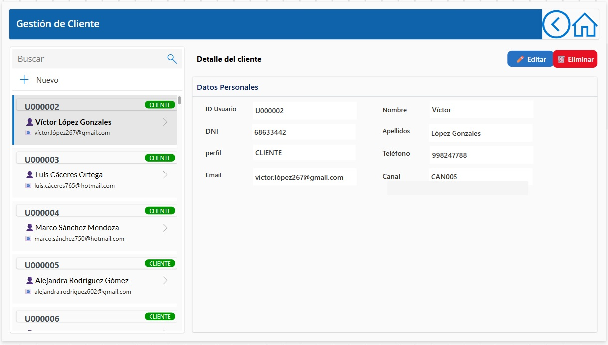
Gestión de Ventas - Seleccionar Cliente
Ventana emergente que facilita la selección de un cliente para asociarlo a una nueva venta. Incluye barra de búsqueda con filtro en tiempo real, lista de clientes con ID y nombre, y botón "Agregar" que dirige a la pantalla de "Gestión Cliente" en caso el cliente no se encuentre registrado.
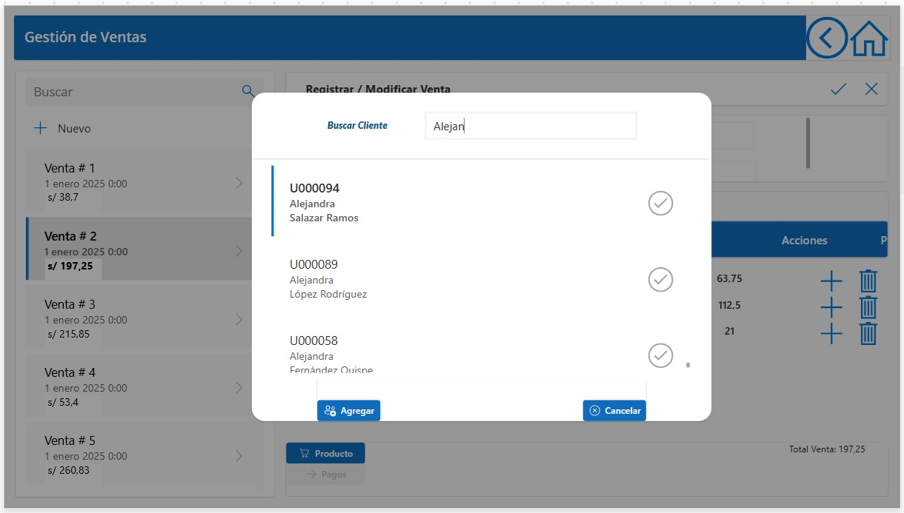
Gestión de Ventas - Seleccionar Producto
Ventana emergente que facilita la adición de productos a una venta. Incluye barra de búsqueda por nombre o ID con filtro automático, lista de productos con ID, nombre, descripción y precio, y permite seleccionar uno o varios productos para añadir a la lista de detalles de la venta.
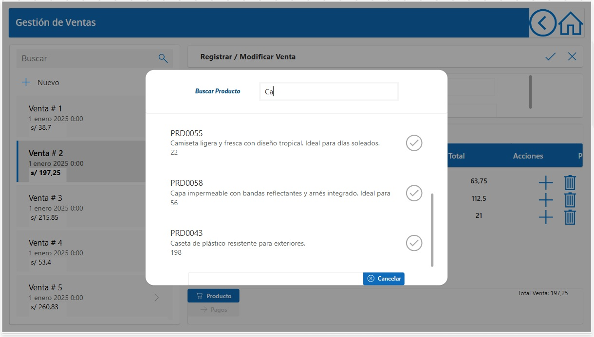
Gestión de Ventas
Permite gestionar las ventas de la tienda como centro de control para ver, modificar y registrar nuevas transacciones. Incluye panel de navegación izquierdo con lista de ventas (ID, fecha, monto), detalle de la venta con datos completos y tabla de productos, funciones de gestión (editar, eliminar, nuevo) y botón de navegación hacia gestión de pagos.
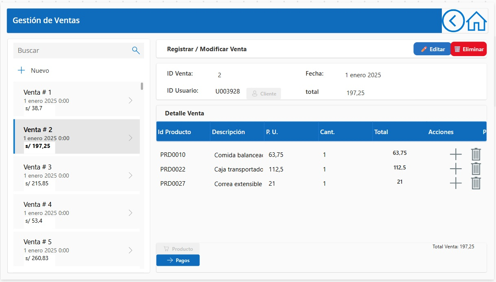
Gestión de Pagos
Permite administrar los pagos de una venta como punto de control para registrar, modificar o eliminar detalles de pago. Incluye panel de navegación izquierdo con ventas, detalle de la venta, detalle de pagos con tabla de información (ID, fecha, medio de pago, estado, monto), acciones de gestión y cálculo de total pagado.
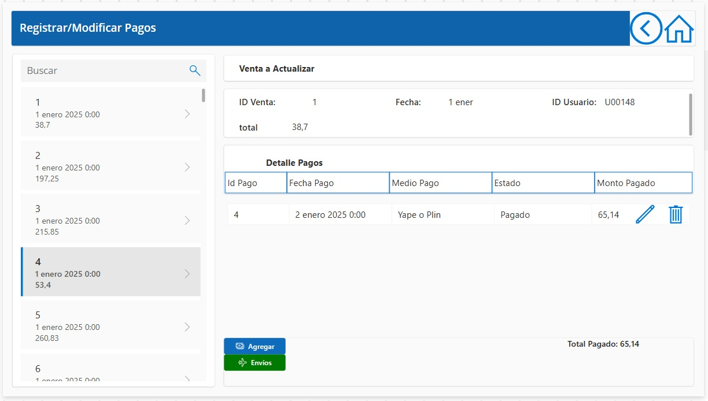
Gestión de Envíos
Permite administrar los envíos asociados a una venta, facilitando el seguimiento del estado y la información de entrega. Incluye panel de navegación izquierdo con ventas, detalle de la venta, detalle de envíos con tabla completa (ID, fechas, estado, costo), acciones de gestión y cálculo de costo total del envío.
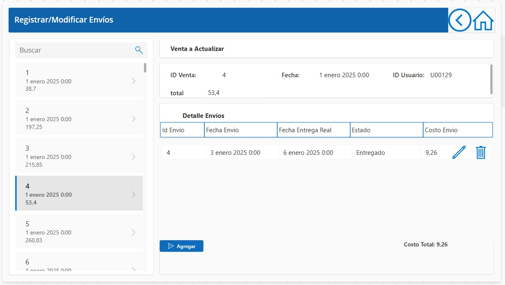
Capa de Extracción, Transformación y Carga (ETL)
ETL y Notebooks con Python en Fabric Data Factory
Este sistema utiliza un flujo de datos automatizado y eficiente que conecta múltiples capas tecnológicas del ecosistema de Microsoft. Microsoft Fabric Data Factory se encarga de la orquestación del flujo ETL, ejecutando extracción de datos de tablas transaccionales, transformación mediante limpieza y estandarización, y carga en el Fabric Data Warehouse.
Al finalizar el pipeline, se ejecuta un Notebook de Python que se conecta al Data Warehouse para calcular KPIs específicos y enviar comunicación automatizada con los resultados a usuarios relevantes.
Microsoft Fabric
Data Factory
Python
Jupyter Notebooks
Pipeline ETL
Flujo de Datos ETL
Los datos se originan a partir de la aplicación de gestión, donde los usuarios registran información sobre Productos, Clientes y Ventas. Estos datos se guardan de forma estructurada en tablas que corresponden a cada entidad, como df_producto, df_usuario, df_venta, df_marca, df_detalleventa, df_visita, df_pago, df_envio, df_proveedor, entre otros.
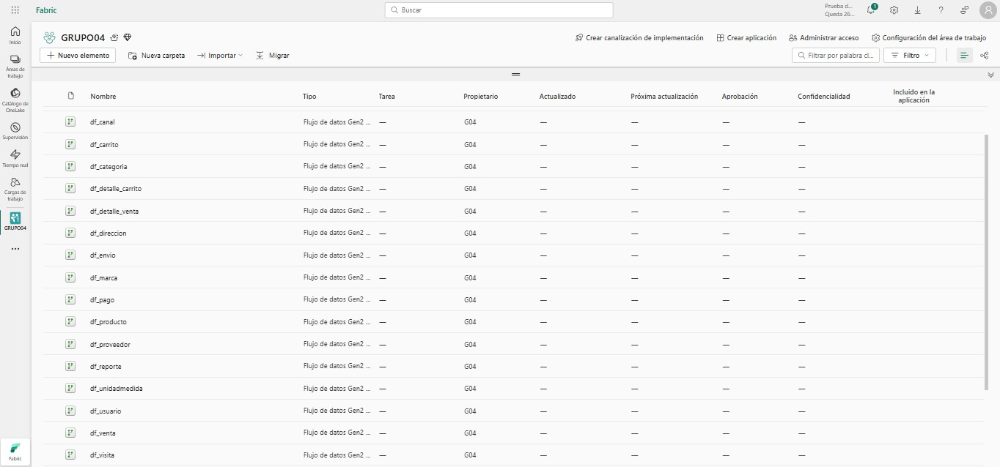
Pipeline ETL - Vista General
Microsoft Fabric Data Factory se encarga de la orquestación del flujo ETL (Extracción, Transformación y Carga). Su función principal es mover los datos del origen al Data Warehouse para su posterior análisis, ejecutando los pasos de extracción, transformación y carga de manera automatizada.
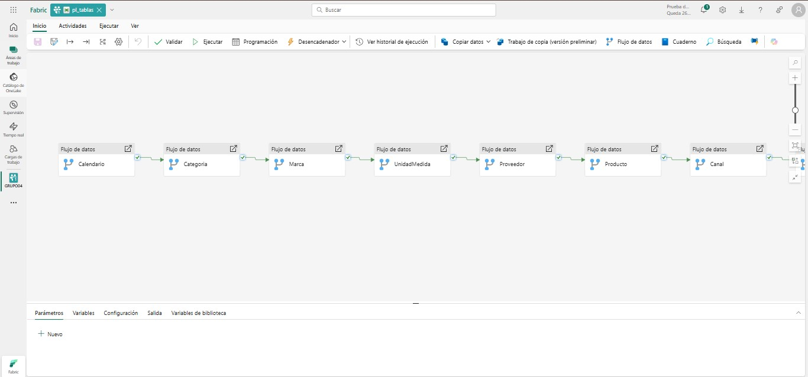
Pipeline ETL - Transformaciones
El pipeline ejecuta procesos de transformación que incluyen limpieza, estandarización y enriquecimiento de los datos a través de Dataflows, preparando la información para su análisis posterior en el Data Warehouse.
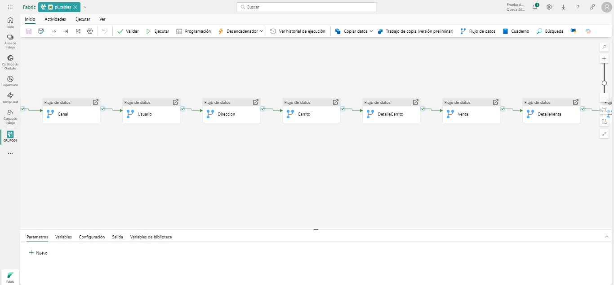
Pipeline ETL - Validaciones
El proceso incluye validaciones y controles de calidad de datos para asegurar la integridad y consistencia de la información que se carga en el Fabric Data Warehouse, minimizando errores y garantizando datos confiables para el análisis.
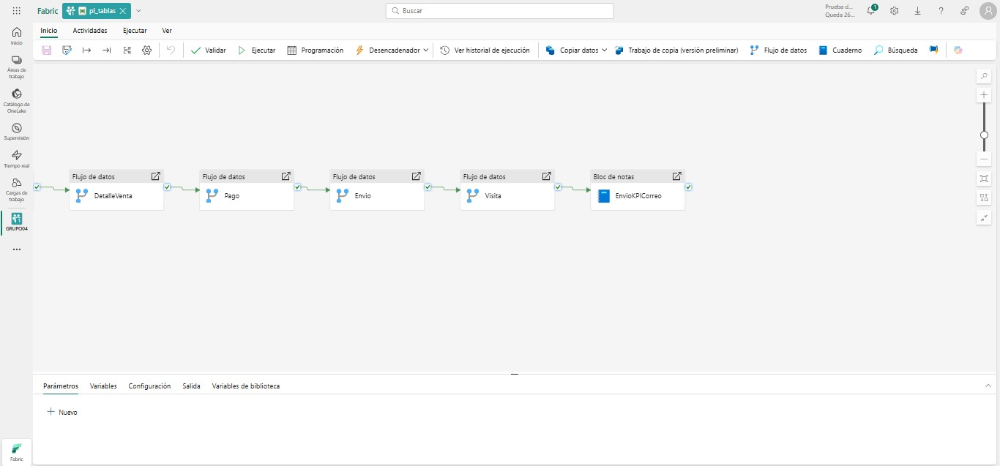
Pipeline ETL Completo
Vista completa del pipeline que muestra el flujo integral desde la extracción de datos de las fuentes originales hasta la carga final en el Data Warehouse, incluyendo todos los procesos de transformación y validación intermedia.
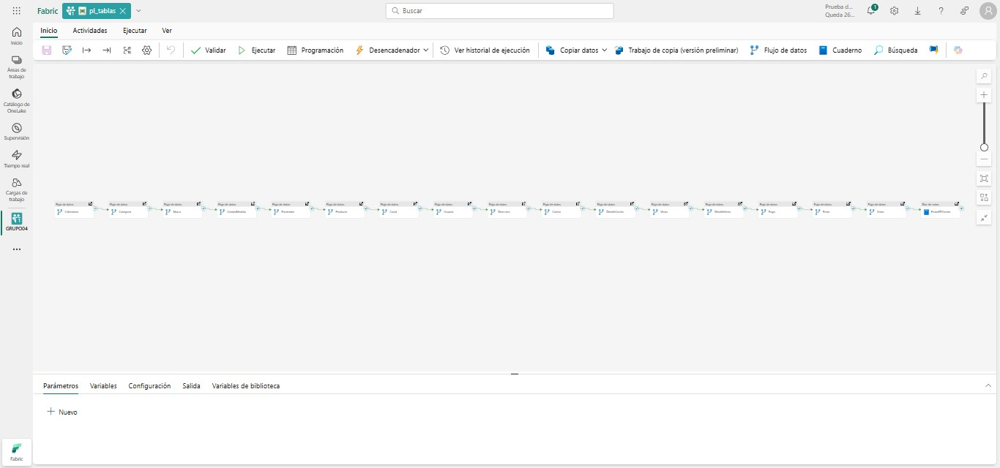
Notebook Python - Extracción
Al finalizar el pipeline, se ejecuta un Notebook de Python que se conecta al Data Warehouse para calcular KPIs específicos, como la tasa de conversión acumulada, un indicador clave de rendimiento de ventas del negocio.
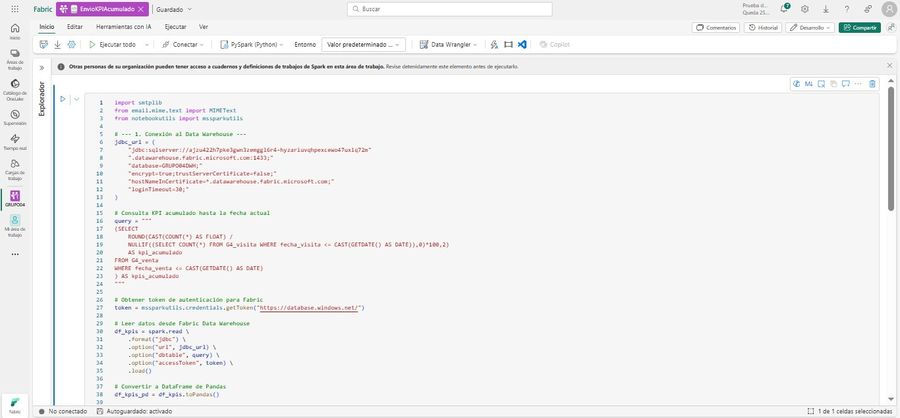
Notebook Python - Transformación
Los notebooks de Python ejecutan algoritmos de transformación, limpieza y cálculos avanzados sobre los datos, permitiendo la creación de métricas y KPIs específicos del negocio que complementan el análisis tradicional.
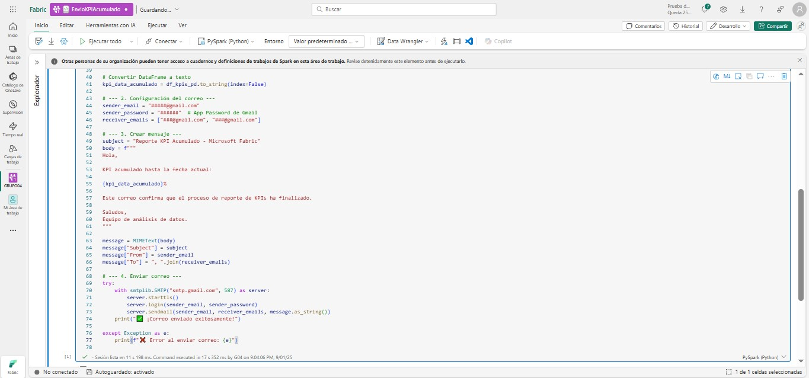
Sistema de Notificaciones
El sistema incluye comunicación automatizada que envía correos electrónicos con los resultados de KPIs calculados a los usuarios o administradores relevantes, asegurando que las métricas clave lleguen de forma automática y oportuna para la toma de decisiones.
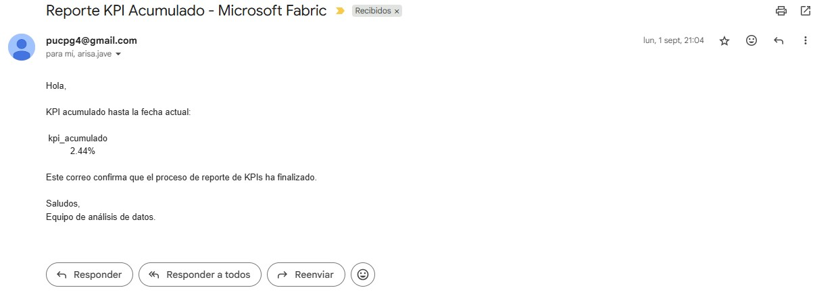
Capa de Almacén de Datos
Data Warehouse con Fabric Warehouse y Automatización con Power Automate
Esta capa constituye el centro del sistema de análisis. Recibe los datos ya procesados por la capa ETL y los almacena en el Fabric Warehouse, un almacén de datos optimizado para consultas y análisis. Los datos son estructurados en un modelo dimensional que facilita la creación de reportes y la toma de decisiones.
.Power Automate es una herramienta de automatización de procesos de Microsoft, que forma parte de la Power Platform junto con Power BI, Power Apps y Power Virtual Agents. Permite crear flujos de trabajo automáticos (workflows) que conectan diferentes aplicaciones y servicios, tanto de Microsoft como de terceros, sin necesidad de programar.
Microsoft Fabric Warehouse
Power Automate
Data Warehouse
Automatización
Arquitectura del Data Warehouse
El Fabric Warehouse sirve como repositorio central de datos analíticos con un diseño que sigue un modelo semántico organizando las tablas para consulta eficiente. La estructura está optimizada para inteligencia de negocios, facilitando el análisis y visualización en herramientas como Power BI.
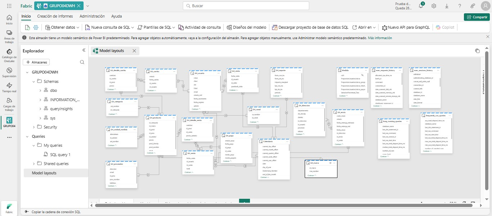
Flujo de Automatización 1 - Reporte PBI Diario
Este flujo envía un reporte programado todos los días a las 8am, enviando un correo electrónico adjuntando un PDF que contiene una hoja del Power BI mostrando el Dashboard. Garantiza que los datos en el Data Warehouse estén siempre actualizados mediante exportación automática de archivos a Power BI.
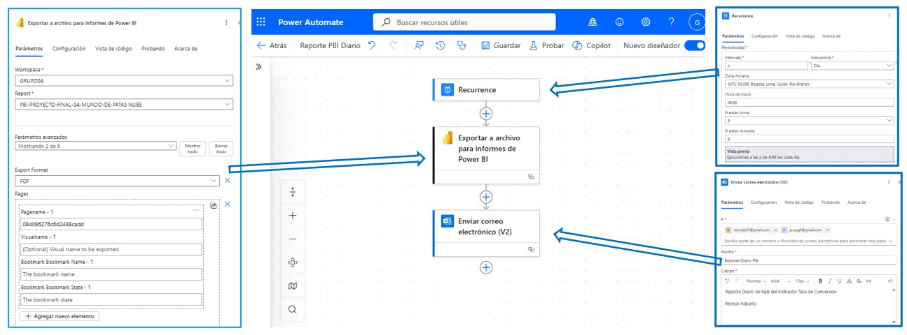
Flujo de Automatización 1 - Configuración Detallada
Detalle de la configuración del flujo automatizado que incluye la programación diaria, la conexión con Power BI, la generación del PDF y el envío del correo electrónico con el reporte adjunto.
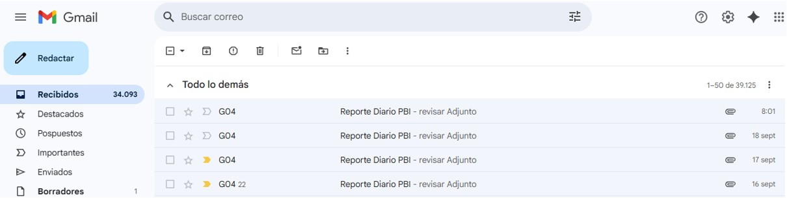
Flujo de Automatización 2 - Alerta Stock
Este flujo envía una alerta cuando se desencadena una alerta basada en datos, notificando si el stock de algún producto llega a la cantidad mínima configurada. Está diseñado para enviar alertas basadas en datos, asegurando una gestión proactiva del inventario.
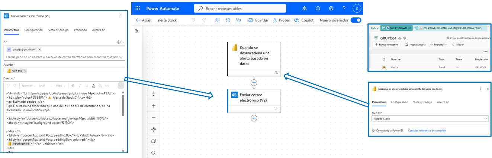
Flujo de Automatización 2 - Configuración Detallada
Configuración detallada del sistema de alertas que incluye la monitorización del stock, la activación de alertas y el envío automático de notificaciones.
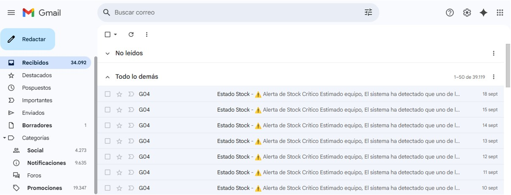
📁 Archivo: 1.Capa-de-almacen-de-datos.jpg
Flujo de Automatización 1 - Reporte PBI Diario
Este flujo envía un reporte programado todos los días a las 8am, enviando un correo electrónico adjuntando un PDF que contiene una hoja del Power BI mostrando el Dashboard. Garantiza que los datos en el Data Warehouse estén siempre actualizados mediante exportación automática de archivos a Power BI.
📁 Archivo: 2.Power_Automate1.jpg
Flujo de Automatización 1 - Configuración Detallada
Detalle de la configuración del flujo automatizado que incluye la programación diaria, la conexión con Power BI, la generación del PDF y el envío del correo electrónico con el reporte adjunto.
📁 Archivo: 2.1.Power_Automate1_1.jpg
Flujo de Automatización 2 - Alerta Stock
Este flujo envía una alerta cuando se desencadena una alerta basada en datos, notificando si el stock de algún producto llega a la cantidad mínima configurada. Está diseñado para enviar alertas basadas en datos, asegurando una gestión proactiva del inventario.
📁 Archivo: 3.Power_Automate2.jpg
Flujo de Automatización 2 - Configuración Detallada
Configuración detallada del sistema de alertas que incluye la monitorización del stock, la definición de umbrales mínimos, la activación de alertas y el envío automático de notificaciones a los equipos relevantes.
📁 Archivo: 3.1.Power_Automate2_1.jpg
Capa de Presentación
Reportes con Microsoft Power BI Service
Desarrollo de dashboards interactivos y reportes ejecutivos utilizando Power BI Service, proporcionando insights valiosos para la toma de decisiones empresariales.
Power BI Service
Dashboard
Data Visualization
Business Intelligence
Dashboard Principal
Vista general de los KPIs principales del negocio con métricas clave de rendimiento empresarial.
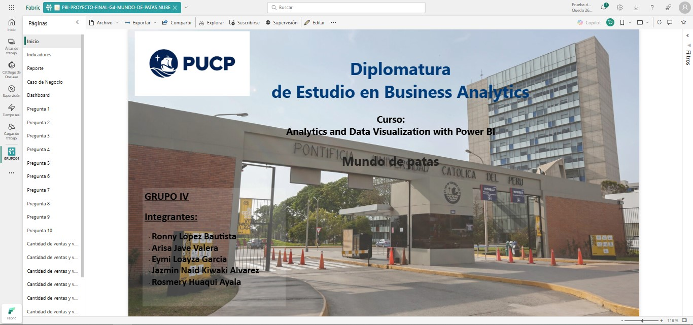
Indicadores de Rendimiento
Métricas clave de performance empresarial que permiten el monitoreo de los indicadores más importantes del negocio.
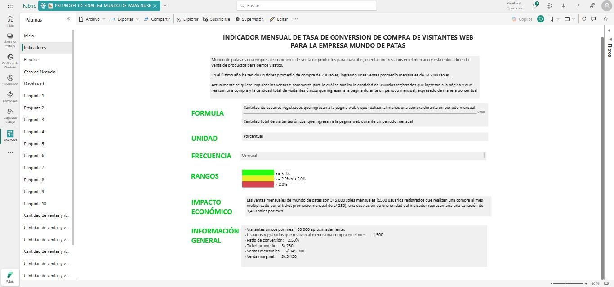
Reportes Analíticos
Análisis detallado de datos operativos que proporciona información profunda sobre el comportamiento del negocio.
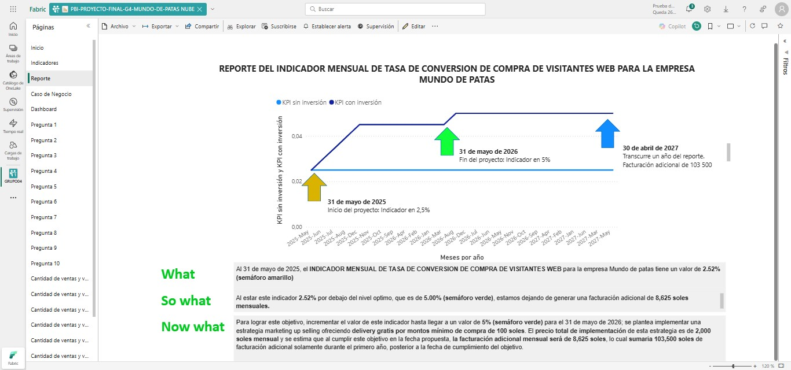
Centro de Negocios
Hub central de información empresarial que consolida los datos más relevantes para la gestión del negocio.
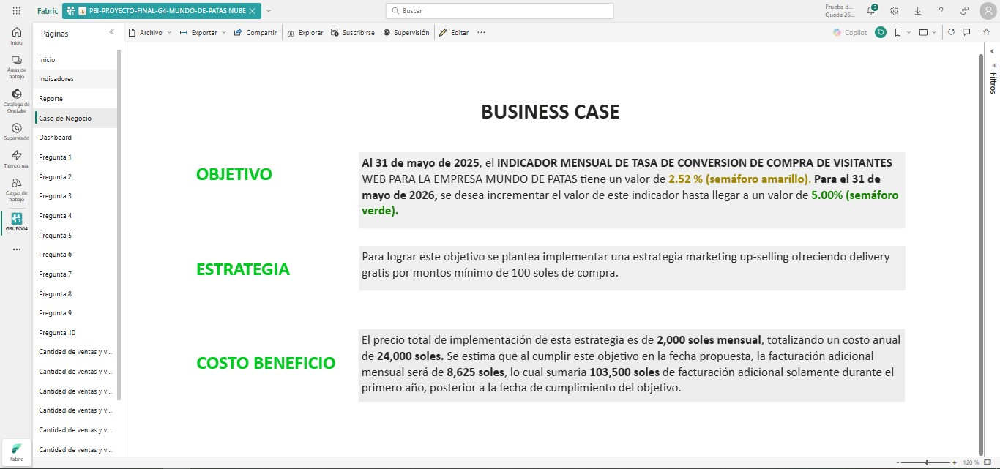
Dashboard Ejecutivo
Vista ejecutiva para toma de decisiones estratégicas con información consolidada de alto nivel.
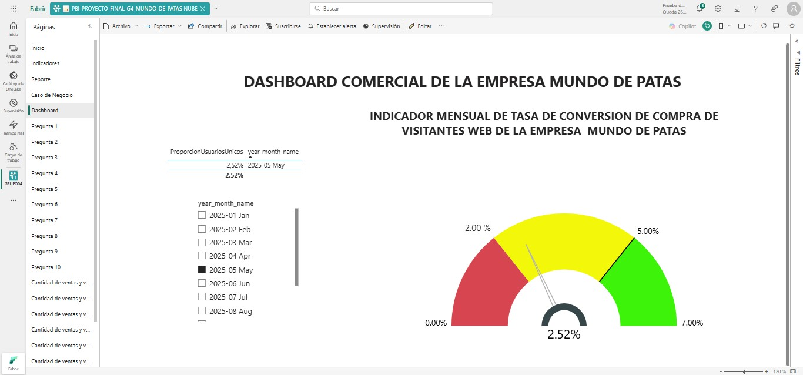
Preguntas de Negocio Respondidas
A continuación se presentan los análisis desarrollados para responder las preguntas clave del negocio, cada uno con sus respectivos detalles y tablas de datos.
Pregunta 1 - Detalle
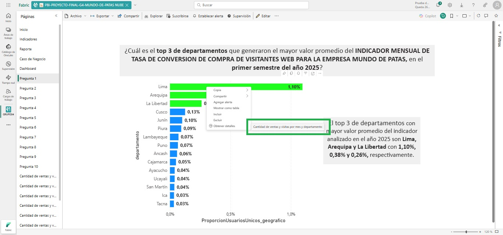
Pregunta 1 - Detalle Tabla
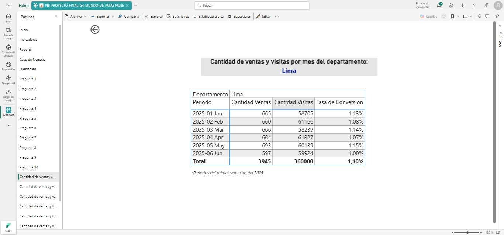
Pregunta 2 - Detalle
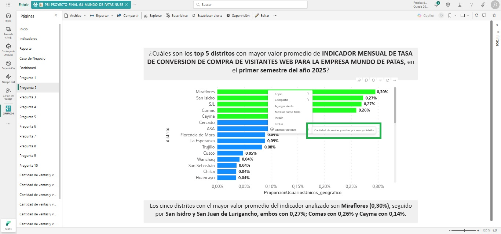
Pregunta 2 - Detalle Tabla
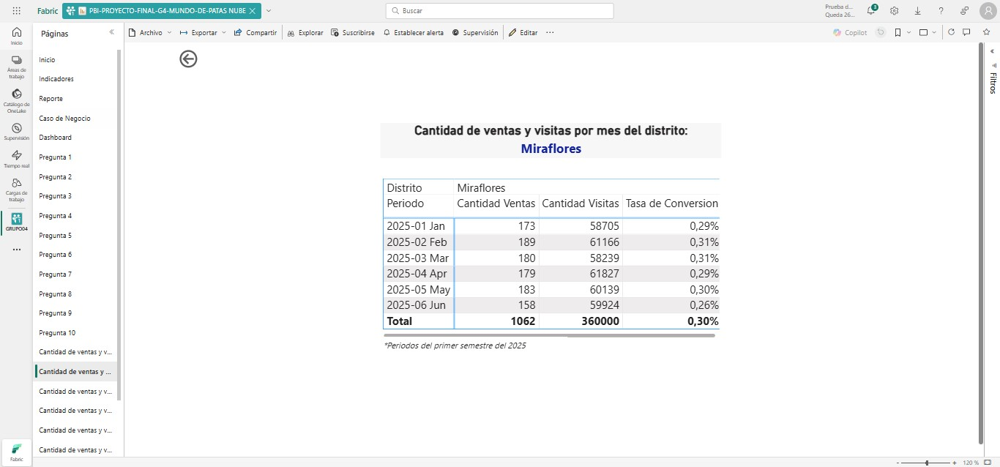
Pregunta 3 - Detalle
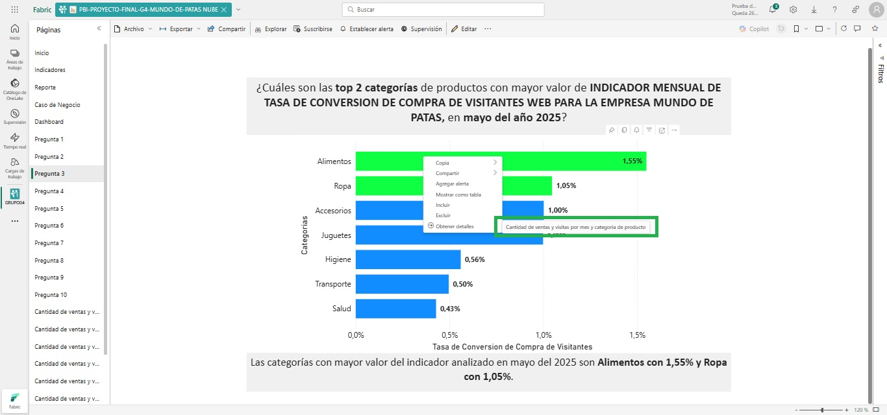
Pregunta 3 - Detalle Tabla
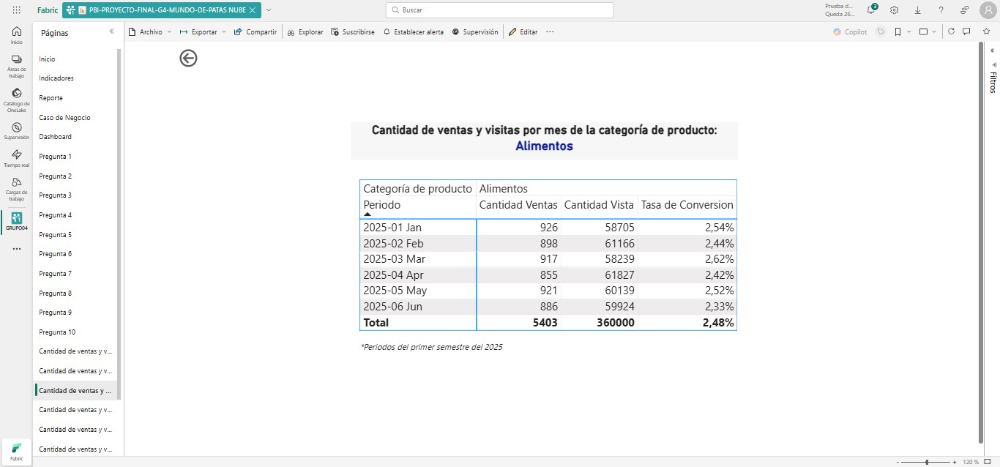
Pregunta 4 - Detalle
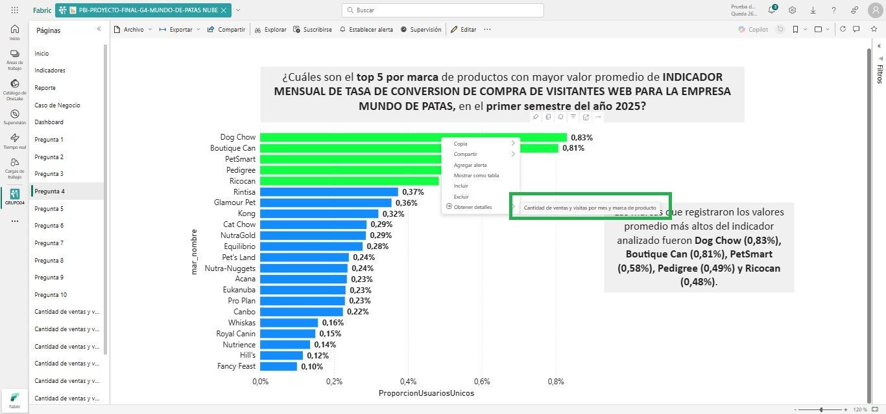
Pregunta 4 - Detalle Tabla
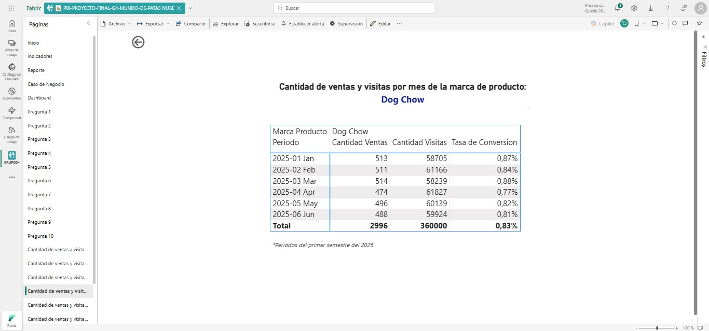
Pregunta 5 - Detalle
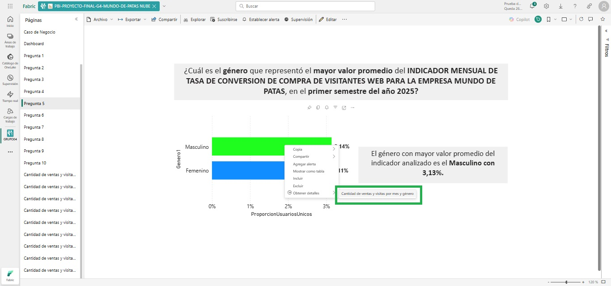
Pregunta 5 - Detalle Tabla
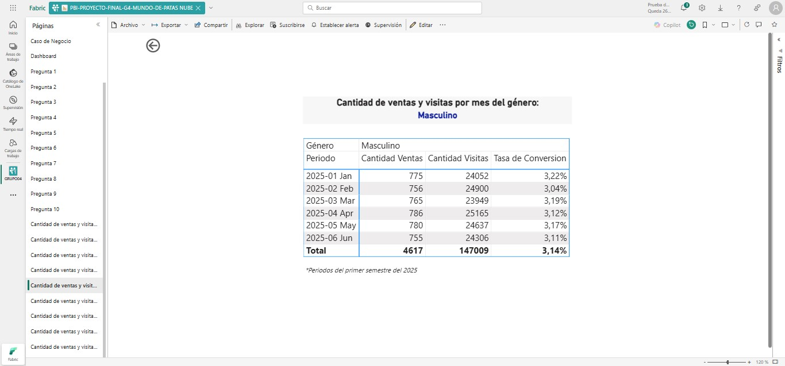
Pregunta 6 - Detalle
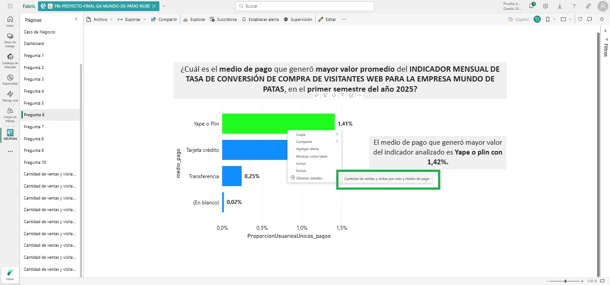
Pregunta 6 - Detalle Tabla
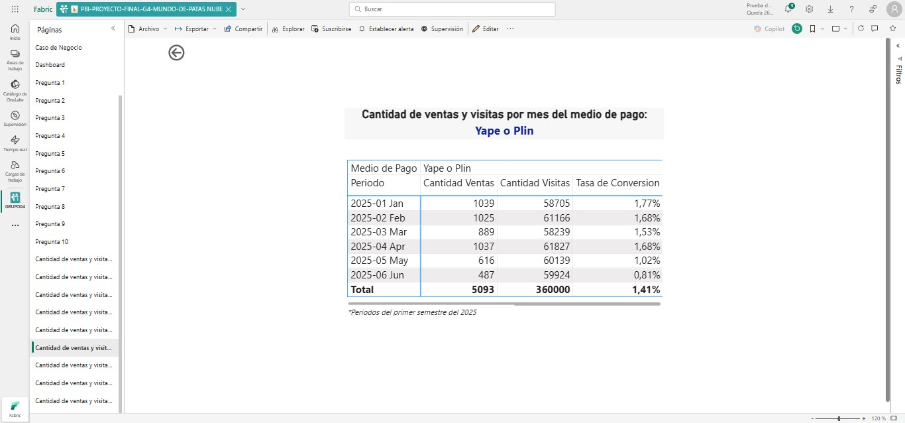
Pregunta 7 - Detalle
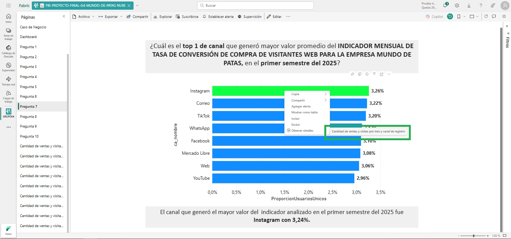
Pregunta 7 - Detalle Tabla
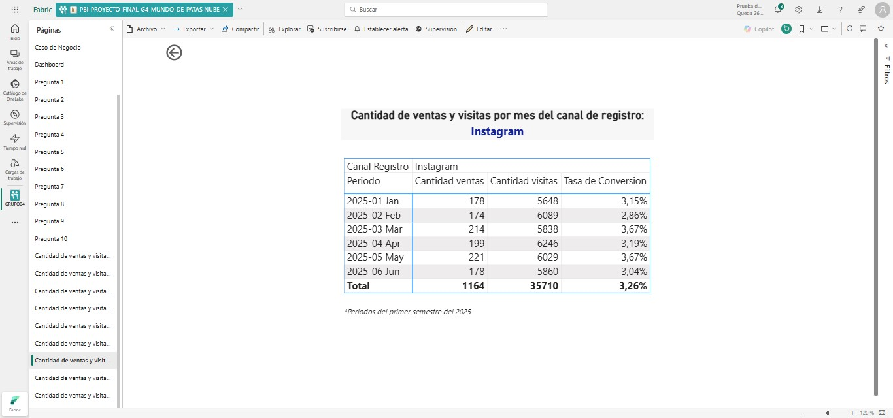
Pregunta 8
Pregunta 9
Pregunta 9 - Detalle
Pregunta 9 - Detalle Tabla
Pregunta 10
Pregunta 10 - Detalle
Pregunta 10 - Detalle Tabla